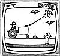
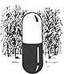

For the Armchair Farmer...
Farm Show magazine features the latest agricultural equipment offerings, ranging from the eminently practical to the merely curious. Among the latter, we found a radio controlled tractor scheduled for production in 1985. The first commercially available model that can be controlled completely by radio and laser automatic pilot, the truck-like vehicle allows its owner-with the aid of a small TV screen-to plow, disk, plant, spray, and cultivate from the comfort of his or her farm office. The cost of such indolence can be high, however: $100,000 for a relatively small 100-HP tractor.
Sweeping It Under the Rug Hasn't Helped
When government regulations forced manufacturers to clean up the air in the immediate vicinity of their factories, companies began pumping sulfur emissions high into the clouds, distributing contamination over a wider geographical area. To comply with existing environmental legislation, chemical firms stopped dumping their residues directly into the river and began bottling them and burying them in the ground, often dangerously close to important groundwater sources. The result of this type of "cleanup," according to the Conservation Foundation's new "State of the Environment" report, is that pollutants have simply been shifted from one part of the environment to another. The report calls for a concerted effort to control contamination across the board, rather than allowing hazardous material to be exported to areas where the regulations don't apply.
Au Clair de Lune
A study reported in Science magazine doesn't go as far as to recommend planting crops by the moon, but it does indicate that lunar influence on the weather-and hence on agriculture-may be greater than we think. Previously, only the sun has been implicated in periodic atmospheric changes that produce longterm weather patterns, but researchers studying tree-ring samples taken on the Great Plains have discovered an 18.6-year drought cycle that may be linked to cycles of the moon. The scientists' findings suggest that a conjunction of solar and lunar cycles might even have been responsible for the dust bowl of the '30's.
First Viral Insecticide Introduced
Farmers have a new biological tool for controlling the ubiquitous Heliothis caterpillar, more commonly known as the corn earworm or tobacco budworm. The control is a virus, the first insecticide of its kind and fatal only to members of the Heliothis clan. One pill-size capsule is sufficient to infect an acre of cotton with the rapidly proliferating virus. In the U.S. alone, the viral insecticide could annually replace more than a million pounds of the chemical insecticides used on cotton.
Lead in Small Doses
Lead in the environment may be somewhat more dangerous than has been supposed. According to a study conducted on lab animals by two Texas A&M University scientists, even low levels of the element may have serious health consequences.
Their research reveals that very low levels of lead exposure can cause increased anxiety or tension, which could contribute to the misuse of alcohol or depressant drugs, and that larger doses significantly suppress response rates, a condition that might eventually interfere with learning abilities.
The researchers also challenge the traditional position that lead is harmful only to young organisms. Adults had been thought to be relatively immune to the effects of lead exposure, but the Texas study indicates that they may be more vulnerable than earlier tests have indicated.
Bear Barter
In South Carolina, bears are getting rather scarce nowadays. Arkansas, on the other hand, has an abundance of them, but Ozark residents have long been envious of South Carolina's native and plentiful population of grouse. So, Outdoor Life magazine tells us, the South Carolina Wildlife Federation made a deal with Arkansas: 120 South Carolina mountain grouse for 6 live-trapped Arkansas hill-country bears. Biologists are watching to determine the success of the swap, which might serve as the pattern for a more extensive stocking program in the future.
|
 |
|
 |
|
|
|
|